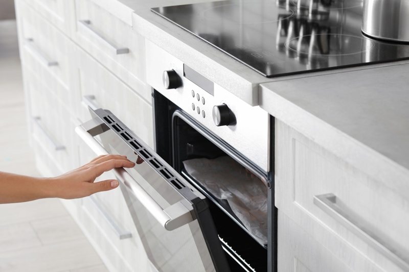
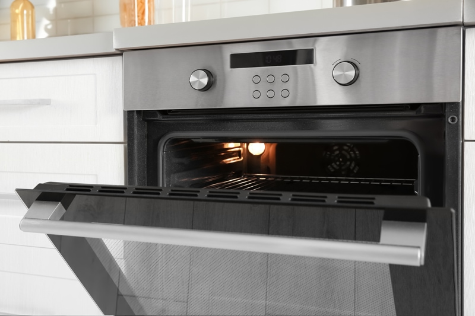

Conventional Oven Food Drying
Drying foods in your oven can be achieved, but you first need to ask yourself how important it is to you to follow the raw food temperature “guidelines” in wanting to protect the enzymes, nutrients, and vitamins. You can use your oven to dehydrate foods, but it isn’t 100% accurate. In times of need, we need to do the best we can with what we have before us. Let me show you how you can turn to your oven to dry foods at low temps.

“Dr. John Whitaker, a world-recognized enzymologist, and a former dean of the Department of Nutrition and Food Science at U.C. Davis stated that every enzyme is different and some are more stable at higher temperatures than others. Most enzymes will not become completely inactive until food temperatures exceed 140º F – 158ºF in a moist, wet state. Again the exceptions are that the denser the food, the longer it will take to totally destroy all its enzymes.”
When it comes to dehydrating food, you don’t have to remove all of the moisture. A dehydrator or the act of dehydrating foods is not just about preserving foods. It’s also used to create texture and cooked appearances. But it is important to know that the more moisture that is left in the food, the shorter the shelf life will be as it is more susceptible to bacteria and molds.
Remember, we don’t have preservatives added to our raw foods. You have the freedom and complete control to create crunchy apple rings or soft and chewy apple rings. That is the beauty of preparing foods from scratch in your own home. If you do use your oven to “bake” some of my recipes, please have a notebook and pencil ready. Jot down how long it took and how you arranged the heat setting. Use this as a reference for future recipes.

So here’s the thing about ovens…
Not all ovens can dip down to 115 degrees (F). Keep reading because I am going to help you run a test on your oven to see if you can achieve raw food temps with your home oven. I spent countless hours reading through site after site, trying to find the best way to do this.
Because internal air is not circulated in most consumer-grade convection ovens, dehydration can take two to three times as long as it does in a dedicated dehydrator, and this will consume much more energy. Below I share how you may be able to achieve lower temps by cracking the oven door and running a small fan next to it. If this is your only option and getting your foods as close to raw as possible is your goal, using an oven thermometer is a must to ensure the temperature is within the target range. Before using an oven for this purpose, do a test run to check the heat levels.
“Calibrating” the Oven Dehydration Method:
- Set the oven to the lowest temperature. If the oven has a “warm” setting, use that.
- Line a cookie sheet with parchment paper. Don’t use wax as it will burn.
- Slice either an onion, tomato, or apple and spread it out on the cookie sheet.
- Make sure to slice the item uniformly so all the slices dry at the same speed. I recommend a mandolin for this job.
- Don’t do a lot of food for this test run.
- Place the cookie sheet and thermometer on the middle rack in the oven.
- Crack the oven door about five inches.
- If the oven door won’t stay cracked open, take a piece of foil and bunch it up, using it as a door stopper.
- Set a small fan next to the oven, facing it so that the air blows across the front of the oven.
- The basic principle of drying is the movement of warm air around the food being dried. Make sure there is gentle airflow.
- The flow will allow moisture to escape, air to circulate, and prevent the oven from getting too hot.
- Every 10-15 minutes, check the reading on the thermometer.
- It may be necessary to turn the cookie sheet(s) around in ovens with uneven heat distribution.
- If the temperature is well above 115 degrees (F), open the oven door a bit further.
- If the temperature is below 115 degrees (F), trying closing it an inch.
- We are trying to find that sweet spot that will dehydrate the foods you create at a temperature that will keep them close to raw.
- Once this is accomplished, write down the oven setting and how much the oven door is cracked. This information will become your guide for future drying sessions.
- Keep in mind that this can fluctuate due to ambient weather, humidity, and how thick the food is that you are drying.
- It’s possible that you may have to turn the food occasionally to allow for even drying.
- Since your oven will be on several hours a day or longer, please be sure an adult is there to keep an eye it. You don’t want to start a fire or allow curious children or pets to get hurt.
- There are many methods of dehydrating. You can use the sun, build your own, and so forth. Perhaps in time, I can experiment with those, but until then, I will stick to my well trusted Excalibur. :)
© AmieSue.com